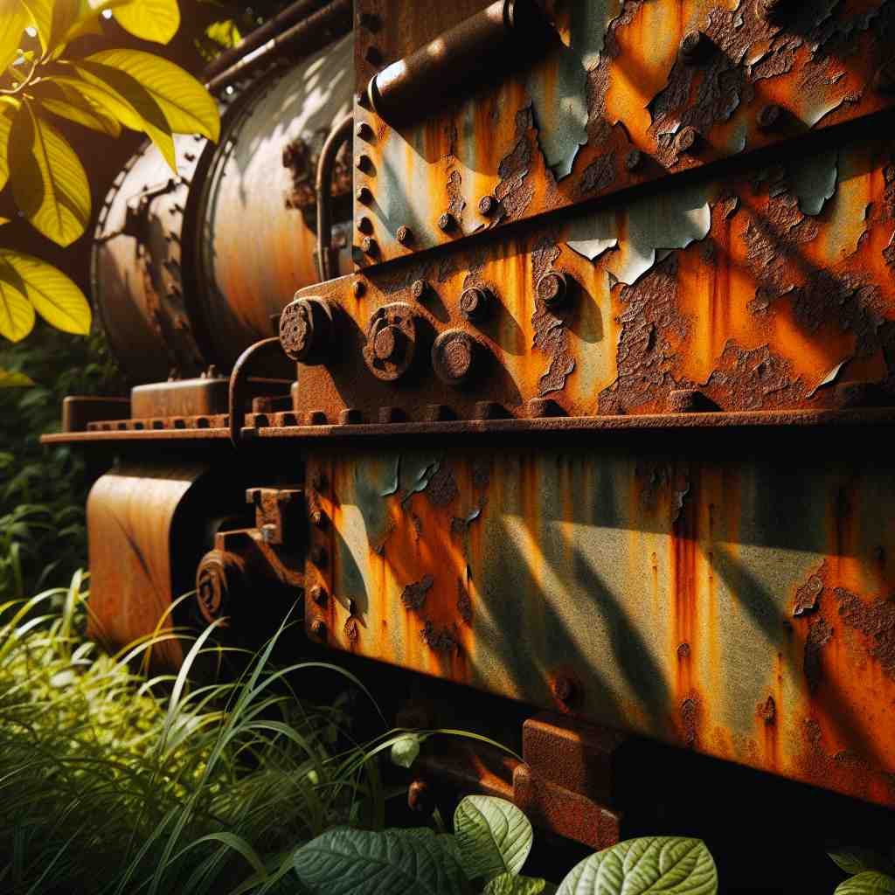
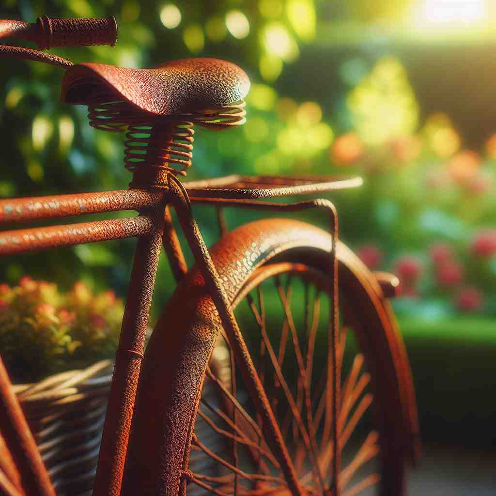

💬 The rust on metal can weaken its structure over time.

💬 The old train has iron with rust everywhere.

💬 The rusty bicycle is sitting in the garden.

💬 There is rust on the bike from years of being outside.
🔈 [rʌst]
🗝️ n. a reddish-brown substance that forms on iron or steel when it comes into contact with water and air
🖼️ 想象一下在一个老旧的船坞里，一艘多年未用的铁船停靠在岸边。船身上斑驳的铁锈闪烁着红棕色的光泽，提醒着人们水与空气共同作用的时间印记。
🔍 通过联想金属表面形成的红褐色物质，可以更好地理解'rust'的各种含义。无论是实际的金属锈蚀，还是比喻性的技能退化，甚至是植物疾病和颜色名称，都源于这个核心概念。记住锈的特征——红褐色、逐渐形成、对物体有负面影响，可以帮助你理解和记忆'rust'的多重含义。
💬 The rust on metal can weaken its structure over time.
💬 The old train has iron with rust everywhere.
💬 The rusty bicycle is sitting in the garden.
💬 There is rust on the bike from years of being outside.
🌳 ‘rust’ 是一个基本词，没有明显的前缀或后缀。这个单词来源于古英语“rūst”，指的是金属因氧化而产生的红棕色物质。
💡 记住 'rust' 可以通过联想生锈的颜色，即红棕色的物质，想象金属表面被腐蚀生锈的样子。
🗝️ v. to become covered with rust
🖼️ 在一个废弃的工厂中，一台有年头的机器安静地立着。由于常年的闲置，那些原本发亮的金属零件已经开始生锈，表面布满红棕色的锈斑，仿佛在诉说它曾经的辉煌。
💬 The iron gate will rust if left out in the rain.
❓ 描述金属表面形成锈的过程
🗝️ v. to deteriorate through disuse or neglect
🖼️ 在一个安静的音乐教室里，一架覆盖着防尘布的钢琴静静躺着。多年无人弹奏，琴键声韵已不如从前，那种因疏于练习而失去往日光彩的状态，也被形象地描述为'rust'。
💬 Your language skills will rust if you don't practice regularly.
❓ 比喻性用法，类比金属生锈的过程来描述技能或能力的退化
🗝️ n. a disease in plants caused by fungi, producing reddish-brown patches
🖼️ 在一个郊区的农田里，一片庄稼正在遭受病害侵袭。农夫仔细观察，发现叶片上泛起了红棕色的斑点，这是植物锈病的典型特征，需要及时处理。
💬 The farmer noticed rust on his wheat crops.
❓ 植物疾病的名称，因其外观与金属锈蚀相似而得名
🗝️ n. a reddish-brown color
🖼️ 在一个艺术家的画室里，调色板上有多种颜色，其中一种独特的红棕色在阳光下尤为迷人。这个颜色完美地捕捉了自然铁锈的美感，通常被称为'rust'色。
💬 She chose a rust-colored scarf to match her autumn outfit.
❓ 以锈的典型颜色命名的色彩